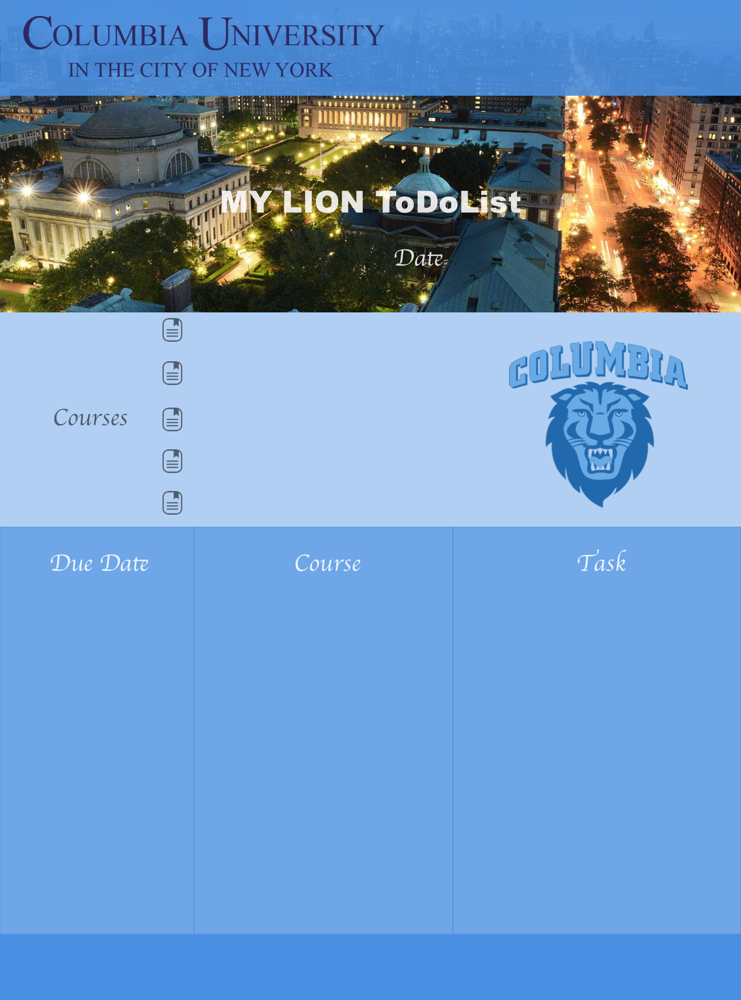
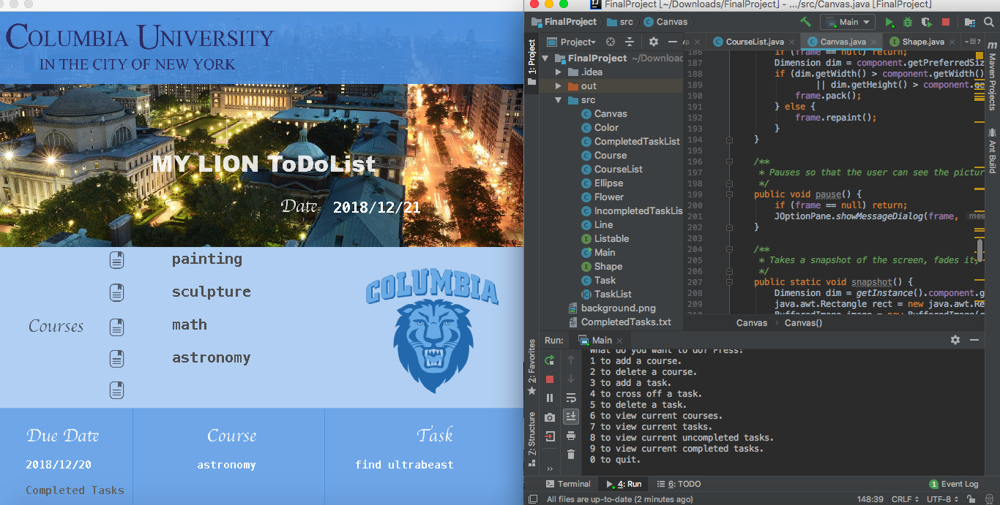

WEB APP DESIGN
BY RU XU
Published December 20, 2018
(Tools: Sketch& Java)
Our target audience consists of Columbia students who may sometimes lose track of their class assignments and due dates. These students may need an application to help them to complete their tasks on time. We plan to create a checklist that asks for the names of classes that students are taking this semester, then allow them to input any assignment and due date for these classes, which will be recorded in a file. Then the checklist reminds the students which assignment they need to complete in order of urgency (starting from the assignment with the most recent due date). When students complete a task, they can cross it off their checklist.
I first design the interface of this application using Sketch
Interface of Application
Then I programme in Java to achieve our goals. Students can add courses/tasks/due dates on this checklist, cross it off when they finish, and due dates would be arranged automatically depends on the most recently one.
Programming in Java
